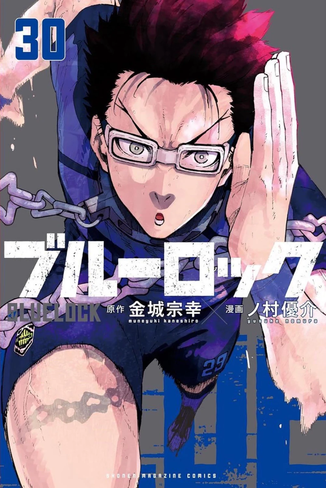
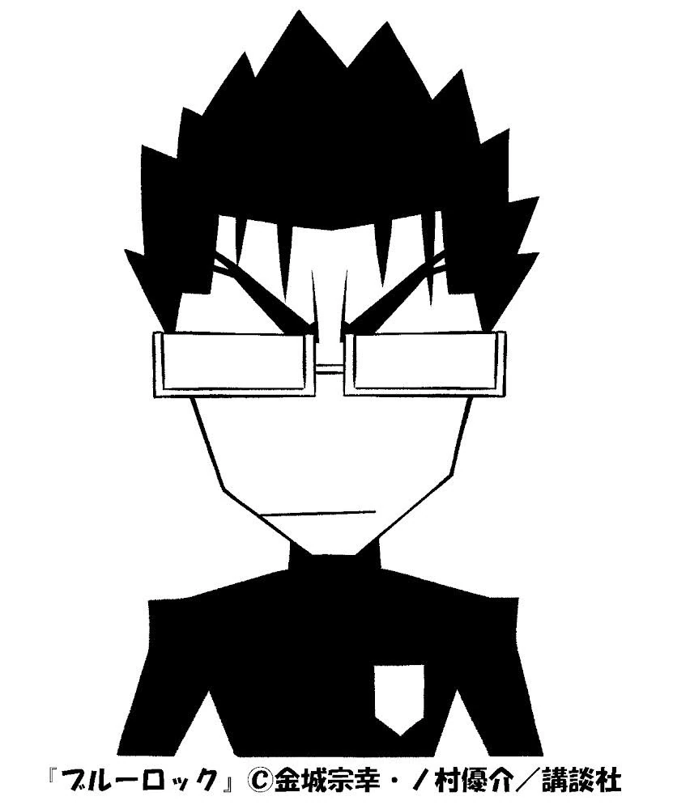
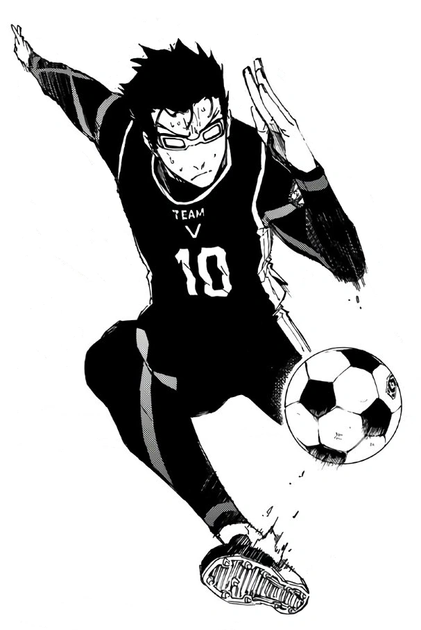
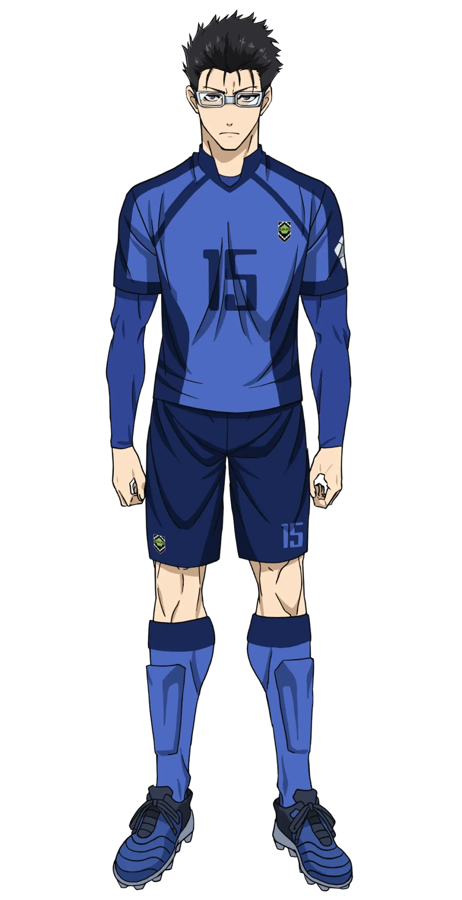

Japanese: 剣城 斬鉄
Rōmaji: Tsurugi Zantetsu
Age: 17
Birthday: October 30
Height: 187cm / 6"2
Hair color: Black
Eye color: Black
Team: Paris X Gen (France)
Jersey Numbers: 15 (Japan U-20) / 29 (PXG)
Position(s): Right Winger / Wingback
Zantetsu has spiky, dark-colored hair and fake glasses that he wears even while playing.
Zantetsu is not a very intelligent individual, and when speaking, he mainly uses idioms just to sound cooler, but he almost always says them incorrectly and always asks others if what he has just said is correct. Due to that, Reo and Nagi have nicknamed him "Baka Zantetsu." On the other hand, he is a calm and coolheaded individual but loses his calm when being called an idiot, as it is something that bothers him immensely, and he believes that truly intelligent people don't call other people idiots.
The other reason he is called an idiot is for his lack of comprehensive ability. At school, he couldn't understand what the textbook was saying, couldn't calculate the train fare, and misunderstood most of Blue Lock selection's activities, as he thought that to pass the Dormitory room test, all he had to do was simply steal the ball from the one who was "it." Another example would be when he thought that in order to pass the First Selection, he had to score 10 goals and, through the point system bonuses, exchange the points to get the one day outside pass so that one can escape Blue Lock.
He is also a determined person, as his motto is "Carry out what you've set out to do," and since he found out that he is good at running, he decided to devote himself to sports just so that he can achieve his dream of becoming the "World's Most Esteemed Moron," though the reason he chose soccer is purely on intuition.
As he comes from a family of dentists, he never forgets to brush his teeth and considers himself the black sheep of the family, as he is the only one who isn't smart. Their family motto is "Even if you forget ceremonial occasions, don't forget to brush your teeth".